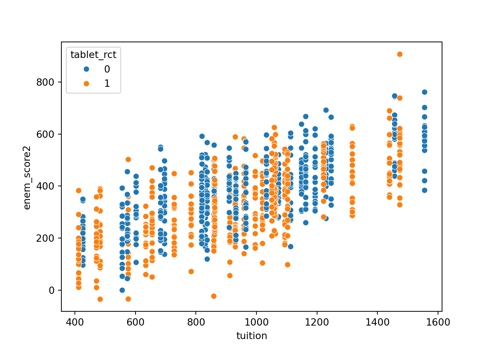

library(tidyverse)
library(ggpubr)
library(MatchIt)GEOG 6960 Causality in Geog. Studies 2
Introduction
In this lab, we’re going to explore what a randomized control trial (RCT) looks like, and the use of propensity score matching to replicate the type of randomization seen in RCTs.
As a reminder, the goal of causal inference is to remove any bias related to the treatment: the covariate we are interested in. This is usually expressed as a confounder : one or more additional covariates (\(X\)) that affect both the treatment (\(T\)) and the outcome (\(Y\)). RCTs avoid this problem by trying to ensure that the assignation of \(T\) is random relative to \(X\). If this is true, then the causal effect (the thing we’re actually interested in) can usually be estimated using simple statistics (\(t\)-tests, linear models).
Packages
We’ll be using the following R packages, so make sure they are installed and then load them:
We’ll be using the following Python packages, so install these using your favorite package manage (pip, conda) and import them:
import random
import numpy as np
import pandas as pd
import matplotlib.pyplot as plt
import seaborn as sns
import statsmodels.api as sm
import statsmodels.formula.api as smfSimulating data
First, we’re going to create a synthetic dataset for use in the lab. Simulating these types of data can be very useful in understanding how models work, and we’ll use it here to illustrate the difference between a randomized trial and a trial where the treatment (\(T\)) is biased. This is particularly useful for causal inference as simulating data allows us to see both the factual (observed) and counterfactual (unobserved) outcomes.
We’re going to use the same example shown in the lectures: a study aiming to estimate the effect of computer tablets (\(T\)) on student test outcomes (\(Y\)). The confounding variable (\(X\)) is the school tuition, taken as a proxy for school wealth. One twist here is that we want to assign tablets by school, not by student, which makes this slightly more complicated.
Before we start, we need to decide some values for the data. You’re very welcome to change these to different values, but I’d suggest first running this with the values given here, then going back to see how changing these affects your results.
We’ll start by setting the random seed (to ensure we get the same results). Again, feel free to change this, but your results will differ slightly from those in this document:
set.seed(1242)np.random.seed(42)Next, let’s define the number of observations:
- Number of schools: 50
- Number of students per school: 20
n_schools = 50
class_size = 20
n_students = n_schools * class_sizen_schools = 50
class_size = 20
n_students = n_schools * class_sizeSchools
We’ll assign the tuition levels randomly from a normal distribution with a mean of 1000 and s.d. of 300:
tuition = round(rnorm(n_schools, 1000, 300))tuition = np.round(np.random.normal(1000, 300, n_schools))Now, we’ll use the tuition to decide whether or not a school assigns tablets to students. We’ll do this randomly, using a binomial distribution, where the probability of a school assign tablets is given by first converting the tuition to a \(z\)-score:
\[ \mbox{tuition}_z = (\mbox{tuition} - mean(\mbox{tuition}) / sd(\mbox{tuition}) \]
Then we get \(p\) for each school as:
\[ p_\mbox{tablet} = exp(\mbox{tuition}_z) / (1 + exp(\mbox{tuition}_z)) \]
Putting this into practice:
tuition_z = (tuition - mean(tuition)) / sd(tuition)
tuition_p = exp(tuition_z)/(1+exp(tuition_z))
tablet = rbinom(n_schools, 1, tuition_p)Let’s put all of this into a data frame:
school_df = data.frame(id = as.factor(1:length(tablet)),
tuition = tuition,
tuition_p = tuition_p,
tablet = as.factor(tablet))tuition_z = (tuition - tuition.mean()) / tuition.std()
tuition_p = np.exp(tuition_z)/(1+np.exp(tuition_z))
tablet = np.random.binomial(1, tuition_p, n_schools)Let’s put all of this into a data frame:
school_df = pd.DataFrame({'id': np.arange(n_schools),
'tuition': tuition,
'tablet': tablet})And we can now visualize some of the results (this is a good way to check that we get what we expect):
ggbarplot(school_df, x = "id", y = "tuition",
fill = "tablet",
palette = "jco",
sort.val = "asc",
sort.by.groups = FALSE,
x.text.angle = 45)ggboxplot(school_df, x = "tablet", y = "tuition") +
theme(legend.position="none") sns.barplot(school_df, x="id", y="tuition",
hue="tablet", order=school_df.sort_values('tuition').id)sns.boxplot(school_df, x="tablet", y="tuition", hue="tablet")We can also test for differences in the tuition rates based on whether or not tablets were assigned:
t.test(tuition ~ tablet, school_df)
Welch Two Sample t-test
data: tuition by tablet
t = -4.3665, df = 47.53, p-value = 6.79e-05
alternative hypothesis: true difference in means between group 0 and group 1 is not equal to 0
95 percent confidence interval:
-494.1193 -182.4862
sample estimates:
mean in group 0 mean in group 1
848.9565 1187.2593 from statsmodels.stats.weightstats import ttest_ind
t_stat, p_value, df = ttest_ind(school_df[school_df['tablet'] == 1]['tuition'],
school_df[school_df['tablet'] == 0]['tuition'])
print(f'T: {t_stat}; p-value: {p_value}')T: 1.8772572008954862; p-value: 0.06656723616720626Students
Now we’ll create class_size students for each school. We first make a data frame of students, by simply repeating the school values for tuition and tablet:
student_df = data.frame(id = 1:(n_students),
school_id = rep(school_df$id, each = class_size),
tuition = rep(tuition, each = class_size),
tablet = factor(rep(tablet, each = class_size)))student_df = pd.DataFrame({'id': np.arange(n_students),
'school_id': np.repeat(school_df['id'], class_size),
'tuition': np.repeat(school_df['tuition'], class_size),
'tablet': np.repeat(school_df['tablet'], class_size)})Now we’ll create a test score for each student. This will again be random, but based on the tuition values of the school (to reflect that we expect students at higher funded schools to test better). Student scores will be taken from a random normal distribution with a s.d. of 200 and the mean given by \(200 + 0.7 \times \mbox{tuition}\). We’ll then rescale the scores so that the maximum is 1000.
student_df$enem_score0 = rnorm(n_students, 200 +
0.7 * student_df$tuition, 200)
student_df$enem_score0 =
(student_df$enem_score0 - min(student_df$enem_score0)) /
max(student_df$enem_score0) * 1000student_df['enem_score0'] = np.random.normal(200 + 0.7 * student_df['tuition'], 200, n_students)
student_df['enem_score0'] = (student_df['enem_score0'] - student_df['enem_score0'].min()) / student_df['enem_score0'].max() * 1000.0Note that this score (enem_score0) is the factual for students who were not assigned a tablet, and the counterfactual for students who were.
Finally, we’ll add a tablet effect. This is the expected change in a student’s score if they were assigned a tablet. For this exercise, we’ll assume that having a tablet reduces scores by 50 points on average, but with a s.d. of 5.
student_df$tablet_eff = rnorm(n_students, -50, 5)
gghistogram(student_df, x = "tablet_eff")Warning: Using `bins = 30` by default. Pick better value with the argument
`bins`.student_df['tablet_eff'] = np.random.normal(-50, 5, n_students)
sns.histplot(student_df, x = "tablet_eff")Finally, add the tablet effect back to the score. We multiply by the binary tablet assignation.
student_df$enem_score1 = student_df$enem_score0 +
student_df$tablet_eff * as.numeric(student_df$tablet)-1
ggboxplot(student_df,
x = "tablet",
y = "enem_score1",
fill = "tablet",
palette = "jco")student_df['enem_score1'] = student_df['enem_score0'] + student_df['tablet_eff'] * student_df['tablet']
sns.boxplot(student_df, x = "tablet", y = "enem_score1",
hue = "tablet")First test
With the data in had, we can test for the causal effect of tablet on the observed scores enem_score1. Before running this, just a reminder of two points. Given the way we have created the data set, we know this is expected to be negative and around -50. But we also know that there is a bias in the tablet assignment from the tuition rates.
As the test scores are normally distributed, and we have two groups (treated and control), we can use a \(t\)-test to explore the differences (as shown above). More usefully, we replace this with a linear model (lm in R or statsmodels.OLS in Python), as this will allow us to test for significance and give us an estimate of the effect in the coefficient \(\beta_1\):
\[ \mbox{enem\_score} = \beta_0 + \beta_1 \times \mbox{tablet} \]
(As an aside, while they are often taught separately, most statistical tests are just special cases of the linear model…)
summary(lm(enem_score1 ~ tablet, student_df))
Call:
lm(formula = enem_score1 ~ tablet, data = student_df)
Residuals:
Min 1Q Median 3Q Max
-432.16 -106.04 1.31 111.37 419.92
Coefficients:
Estimate Std. Error t value Pr(>|t|)
(Intercept) 319.275 7.130 44.779 < 2e-16 ***
tablet1 77.639 9.703 8.002 3.39e-15 ***
---
Signif. codes: 0 '***' 0.001 '**' 0.01 '*' 0.05 '.' 0.1 ' ' 1
Residual standard error: 152.9 on 998 degrees of freedom
Multiple R-squared: 0.06029, Adjusted R-squared: 0.05935
F-statistic: 64.03 on 1 and 998 DF, p-value: 3.385e-15Which gives us a highly significant effect of 77.64. Now you should be able to see the impact of the tuition bias: we expected an effect of around -50 and we got 77.64 instead.
mod = smf.ols(formula='enem_score1 ~ tablet', data=student_df)
fit = mod.fit()
print(fit.summary()) OLS Regression Results
==============================================================================
Dep. Variable: enem_score1 R-squared: 0.000
Model: OLS Adj. R-squared: -0.001
Method: Least Squares F-statistic: 0.03153
Date: Thu, 05 Sep 2024 Prob (F-statistic): 0.859
Time: 16:14:47 Log-Likelihood: -6329.6
No. Observations: 1000 AIC: 1.266e+04
Df Residuals: 998 BIC: 1.267e+04
Df Model: 1
Covariance Type: nonrobust
==============================================================================
coef std err t P>|t| [0.025 0.975]
------------------------------------------------------------------------------
Intercept 351.4540 6.201 56.674 0.000 339.285 363.623
tablet 1.5269 8.600 0.178 0.859 -15.349 18.402
==============================================================================
Omnibus: 4.240 Durbin-Watson: 1.102
Prob(Omnibus): 0.120 Jarque-Bera (JB): 4.314
Skew: 0.151 Prob(JB): 0.116
Kurtosis: 2.888 Cond. No. 2.67
==============================================================================
Notes:
[1] Standard Errors assume that the covariance matrix of the errors is correctly specified.You can also see this effect if you plot the test scores against tuition:
ggscatter(student_df,
x = "tuition",
y = "enem_score1",
col = "tablet",
palette = "jco")sns.scatterplot(student_df,
x = "tuition",
y = "enem_score1",
hue = "tablet")Where you’ll see both the influence of tuition and the asymmetric distribution of tablets.
Randomized trial
We’ll now repeat this test, but by simulating a random trial of tablets across schools. To keep this comparable to the previous (biased) example, we’ll work with the same data. First we assign tablets randomly
school_df$tablet_rct = as.factor(sample(rep(c(0,1), n_schools/2)))
ggbarplot(school_df, x = "id", y = "tuition",
fill = "tablet_rct",
palette = "jco",
sort.val = "asc",
sort.by.groups = FALSE,
x.text.angle = 45) school_df['tablet_rct'] = school_df['tablet'].sample(n_schools).to_numpy()
sns.barplot(school_df, x="id", y="tuition",
hue="tablet_rct", order=school_df.sort_values('tuition').id)Next we create a new set of test scores by updating the original scores (enem_score0) with tablet effect multiplied by the new tablet assignment. If we then repeat the scatter plot using the new scores and tablet assignments, you should see a more even distribution:
student_df$tablet_rct = rep(school_df$tablet_rct, each = class_size)
student_df$enem_score2 = student_df$enem_score0 +
student_df$tablet_eff * as.numeric(student_df$tablet_rct)-1
ggscatter(student_df,
x = "tuition",
y = "enem_score2",
col = "tablet_rct",
palette = "jco")And now if we repeat our linear model, we get an effect that is much closer to the expected value of -50.
summary(lm(enem_score2 ~ tablet_rct, student_df))
Call:
lm(formula = enem_score2 ~ tablet_rct, data = student_df)
Residuals:
Min 1Q Median 3Q Max
-442.06 -115.71 -5.93 118.81 486.75
Coefficients:
Estimate Std. Error t value Pr(>|t|)
(Intercept) 380.065 7.399 51.367 < 2e-16 ***
tablet_rct1 -33.930 10.464 -3.243 0.00122 **
---
Signif. codes: 0 '***' 0.001 '**' 0.01 '*' 0.05 '.' 0.1 ' ' 1
Residual standard error: 165.4 on 998 degrees of freedom
Multiple R-squared: 0.01043, Adjusted R-squared: 0.009434
F-statistic: 10.51 on 1 and 998 DF, p-value: 0.001223student_df['tablet_rct'] = np.repeat(school_df['tablet_rct'], class_size)
student_df['enem_score2'] = student_df['enem_score0'] + student_df['tablet_eff'] * student_df['tablet_rct']
sns.scatterplot(student_df,
x = "tuition",
y = "enem_score2",
hue = "tablet_rct")
And now if we repeat our linear model, we get an effect that is much closer to the expected value of -50.
mod = smf.ols(formula='enem_score2 ~ tablet_rct', data=student_df)
fit = mod.fit()
print(fit.summary()) OLS Regression Results
==============================================================================
Dep. Variable: enem_score2 R-squared: 0.037
Model: OLS Adj. R-squared: 0.037
Method: Least Squares F-statistic: 38.86
Date: Thu, 05 Sep 2024 Prob (F-statistic): 6.71e-10
Time: 16:14:48 Log-Likelihood: -6347.3
No. Observations: 1000 AIC: 1.270e+04
Df Residuals: 998 BIC: 1.271e+04
Df Model: 1
Covariance Type: nonrobust
==============================================================================
coef std err t P>|t| [0.025 0.975]
------------------------------------------------------------------------------
Intercept 380.5017 6.312 60.281 0.000 368.115 392.888
tablet_rct -54.5671 8.753 -6.234 0.000 -71.744 -37.390
==============================================================================
Omnibus: 3.915 Durbin-Watson: 1.067
Prob(Omnibus): 0.141 Jarque-Bera (JB): 3.988
Skew: 0.145 Prob(JB): 0.136
Kurtosis: 2.892 Cond. No. 2.67
==============================================================================
Notes:
[1] Standard Errors assume that the covariance matrix of the errors is correctly specified.Propensity score matching
In the previous sections, we looked at the effect of having a randomized or biased design in our data, and how this can impact the conclusions that we draw. But what do you do when you don’t have a randomized trial? In a lot of situations, we have natural experiments; where ‘treatments’ have taken place for other reasons than our tests. This is the case with the first set of test scores - these were created to mimic a natural experiment where schools had decided themselves (and partly based on finances) whether or not to give students tablets. In this case, we can use propensity score matching to try and reduce any biases.
The aim here is to create a subset of data with matched treated and control samples, where the confounding variables (e.g. tuition) are used to make the matches. The idea being that if we have treatments and controls for similar tuition levels, then the remaining difference in test scores should be due to the effect of the treatment (the tablets in our example).
Here, we’ll look briefly at how propensity scores are calculated, then use an add-on package to calculate these for our dataset. Finally, we’ll re-run our model to test for tablet-related test score differences with the new, matched set.
Let’s remind ourselves of the data we have available:
head(school_df) id tuition tuition_p tablet tablet_rct
1 1 1084 0.5402727 1 1
2 2 861 0.3714199 1 0
3 3 936 0.4268085 0 1
4 4 1620 0.8598539 1 0
5 5 1428 0.7724307 1 1
6 6 784 0.3178776 1 1head(student_df) id school_id tuition tablet enem_score0 tablet_eff enem_score1 tablet_rct
1 1 1 1084 1 730.6342 -50.60501 628.4242 1
2 2 1 1084 1 585.3498 -51.11708 482.1156 1
3 3 1 1084 1 618.7099 -44.67392 528.3621 1
4 4 1 1084 1 513.1673 -53.44279 405.2818 1
5 5 1 1084 1 475.5372 -46.81305 380.9111 1
6 6 1 1084 1 639.4113 -41.48421 555.4428 1
enem_score2
1 628.4242
2 482.1156
3 528.3621
4 405.2818
5 380.9111
6 555.4428school_df.head() id tuition tablet tablet_rct
0 0 1149.0 1 0
1 1 959.0 0 1
2 2 1194.0 1 0
3 3 1457.0 0 0
4 4 930.0 1 1student_df.head() id school_id tuition ... enem_score1 tablet_rct enem_score2
0 0 0 1149.0 ... 345.201552 0 396.496762
0 1 0 1149.0 ... 449.695558 0 500.677307
0 2 0 1149.0 ... 408.749080 0 459.107087
0 3 0 1149.0 ... 495.975591 0 546.161703
0 4 0 1149.0 ... 332.925810 0 379.287662
[5 rows x 9 columns]Although we are testing for the differences in students, the assignment (and therefore propensity) needs to be calculated for the schools, so we’ll use schools_df for the next steps. Note that propensity score usually works best with larger datasets, and is somewhat limited with only 50 samples.
Propensity scores are simply the probability that a given observation was selected for the treatment. The important part is that we want to estimate these probabilities using the same covariate(s) that we think (or know) caused the bias in the treatment. We’ll estimate this here using binomial regression in a generalized linear model, but note you can use any model that works with a binary outcome (random forests, boosted trees, etc).
In R, we can fit this model using glm and by setting the family to binomial:
fit_ps <- glm(tablet ~ tuition, school_df, family = binomial())
summary(fit_ps)
Call:
glm(formula = tablet ~ tuition, family = binomial(), data = school_df)
Coefficients:
Estimate Std. Error z value Pr(>|z|)
(Intercept) -4.114829 1.321285 -3.114 0.00184 **
tuition 0.004234 0.001294 3.273 0.00106 **
---
Signif. codes: 0 '***' 0.001 '**' 0.01 '*' 0.05 '.' 0.1 ' ' 1
(Dispersion parameter for binomial family taken to be 1)
Null deviance: 68.994 on 49 degrees of freedom
Residual deviance: 53.442 on 48 degrees of freedom
AIC: 57.442
Number of Fisher Scoring iterations: 4We can now extract the estimated propensity scores into a new data.frame
prs_df <- data.frame(prop_score = predict(fit_ps, type = "response"),
tablet = as.numeric(fit_ps$model$tablet)-1,
tuition = fit_ps$model$tuition)
head(prs_df) prop_score tablet tuition
1 0.6165972 1 1084
2 0.3848259 1 861
3 0.4621865 0 936
4 0.9396136 1 1620
5 0.8734399 1 1428
6 0.3110631 1 784In Python, we can fit this model using the glm function from statsmodels and by setting the family to binomial:
mod = smf.glm(formula='tablet ~ tuition', data=school_df, family=sm.families.Binomial())
fit = mod.fit()
print(fit.summary()) Generalized Linear Model Regression Results
==============================================================================
Dep. Variable: tablet No. Observations: 50
Model: GLM Df Residuals: 48
Model Family: Binomial Df Model: 1
Link Function: Logit Scale: 1.0000
Method: IRLS Log-Likelihood: -32.853
Date: Thu, 05 Sep 2024 Deviance: 65.706
Time: 16:14:48 Pearson chi2: 50.1
No. Iterations: 4 Pseudo R-squ. (CS): 0.06814
Covariance Type: nonrobust
==============================================================================
coef std err z P>|z| [0.025 0.975]
------------------------------------------------------------------------------
Intercept -1.7868 1.077 -1.659 0.097 -3.897 0.324
tuition 0.0020 0.001 1.794 0.073 -0.000 0.004
==============================================================================We can now extract the estimated propensity scores into a new data.frame
prs_df = pd.DataFrame({'prop_score': fit.predict(),
'tablet': school_df['tablet'],
'tuition': school_df['tuition']})
prs_df.head() prop_score tablet tuition
0 0.627858 1 1149.0
1 0.535210 0 959.0
2 0.648739 1 1194.0
3 0.758087 0 1457.0
4 0.520682 1 930.0To illustrate how a simple match would happen, let’s split this into a treatment and control data set:
treated_df = prs_df %>%
filter(tablet == 1)
control_df = prs_df %>%
filter(tablet == 0)Then, for the first sample, we can estimate the differences in propensity score and find the closest match:
match_id = which.min(abs(treated_df$prop_score[1] - control_df$prop_score))
match_id[1] 5And show the matching sample (the tuition should be similar to the first treated sample):
control_df[match_id, ] prop_score tablet tuition
15 0.6175977 0 1085treated_df = prs_df[prs_df['tablet'] == 1].reset_index()
control_df = prs_df[prs_df['tablet'] == 0].reset_index()Then, for the first sample, we can estimate the differences in propensity score and find the closest match:
abs_diff = (treated_df['prop_score'][0] - control_df['prop_score']).abs()
match_id = abs_diff.idxmin()
print(match_id)4And show the matching sample (the tuition should be similar to the first treated sample):
control_df.iloc[match_id,:]index 9.00000
prop_score 0.63441
tablet 0.00000
tuition 1163.00000
Name: 4, dtype: float64We could obviously make this into a loop and get all the matches, but instead we’ll use an external package to carry out the full match.
In R, the package we will use is called MatchIt. It is pretty well established and allows you to choose different method to calculate the scores and carry out matching.
To get an idea of the output, we’ll first run this with no matching (method = NULL). The output will show some summary statistics on the match between the treatment and control. The first line (distance) shows the difference in propensity score between the two groups and the second (and subsequent) line shows the difference in the covariate. A useful index is the standardized mean difference, which allows you to compare difference covariates (if you have them). The goal of matching will be to reduce this difference.
match0 = matchit(tablet ~ tuition, data = school_df,
method = NULL, distance = "glm")
summary(match0)
Call:
matchit(formula = tablet ~ tuition, data = school_df, method = NULL,
distance = "glm")
Summary of Balance for All Data:
Means Treated Means Control Std. Mean Diff. Var. Ratio eCDF Mean
distance 0.664 0.3944 1.0838 1.4057 0.2842
tuition 1187.259 848.9565 1.0929 1.6977 0.2842
eCDF Max
distance 0.5427
tuition 0.5427
Sample Sizes:
Control Treated
All 23 27
Matched 23 27
Unmatched 0 0
Discarded 0 0Now, we’ll re-run and use nearest neighbor matching to selected control schools.
match1 = matchit(tablet ~ tuition, data = school_df,
method = "nearest", distance = "glm")Warning: Fewer control units than treated units; not all treated units will get
a match.summary(match1, un = FALSE)
Call:
matchit(formula = tablet ~ tuition, data = school_df, method = "nearest",
distance = "glm")
Summary of Balance for Matched Data:
Means Treated Means Control Std. Mean Diff. Var. Ratio eCDF Mean
distance 0.7356 0.3944 1.3717 0.8313 0.3617
tuition 1269.9130 848.9565 1.3599 1.1421 0.3617
eCDF Max Std. Pair Dist.
distance 0.6522 1.3717
tuition 0.6522 1.3599
Sample Sizes:
Control Treated
All 23 27
Matched 23 23
Unmatched 0 4
Discarded 0 0The results here are slightly worse (the std. differences have increased). This is due to the sequential nature of the method used, where the first treated sample is matched to the closest control. This control is then excluded from subsequent matches, even if they are better. We’ll re-run using replacement matching (where each control can be matched to multiple treated samples):
match1 = matchit(tablet ~ tuition, data = school_df,
method = "nearest", distance = "glm",
replace = TRUE)
summary(match1, un = FALSE)
Call:
matchit(formula = tablet ~ tuition, data = school_df, method = "nearest",
distance = "glm", replace = TRUE)
Summary of Balance for Matched Data:
Means Treated Means Control Std. Mean Diff. Var. Ratio eCDF Mean
distance 0.664 0.6353 0.1156 0.9800 0.0585
tuition 1187.259 1123.9259 0.2046 1.2934 0.0585
eCDF Max Std. Pair Dist.
distance 0.3704 0.1641
tuition 0.3704 0.2549
Sample Sizes:
Control Treated
All 23. 27
Matched (ESS) 3.9 27
Matched 8. 27
Unmatched 15. 0
Discarded 0. 0Now we obtain a better match as shown by the decrease in std. differences. Note in the sample sizes that the total number of retained control samples is only 8, which is probably too low in practice.
We can see the results of the match using the plot() function. For example, this shows the histograms of treated (top) and control (bottom), before (left) and after (right) matching.
plot(match1, type = "hist", interactive = FALSE)And this shows the same for the empirical cumulative distribution functions:
plot(match1, type = "ecdf", interactive = FALSE)We can now repeat our test for the effect of the tablets on test scores, but using the matched samples. As we’ve matched the schools, we now need to create a new dataset that includes only the students from these schools. First extract the match ‘ids’ (the rows from the original school_df data frame)
match_df = get_matches(match1, id = "mid")Now we can loop across these and create a new data frame by appending the students from each matched school in turn:
match_student_df = NULL
for (i in 1:nrow(match_df)) {
tmp_df = student_df %>%
filter(school_id == as.numeric(match_df$mid)[i])
match_student_df = rbind(match_student_df, tmp_df)
}And finally, we can repeat our test:
summary(lm(enem_score1 ~ tablet, match_student_df))
Call:
lm(formula = enem_score1 ~ tablet, data = match_student_df)
Residuals:
Min 1Q Median 3Q Max
-432.16 -109.72 7.64 95.34 419.92
Coefficients:
Estimate Std. Error t value Pr(>|t|)
(Intercept) 427.098 6.451 66.212 < 2e-16 ***
tablet1 -30.184 9.122 -3.309 0.000968 ***
---
Signif. codes: 0 '***' 0.001 '**' 0.01 '*' 0.05 '.' 0.1 ' ' 1
Residual standard error: 149.9 on 1078 degrees of freedom
Multiple R-squared: 0.01005, Adjusted R-squared: 0.009135
F-statistic: 10.95 on 1 and 1078 DF, p-value: 0.0009681Which shows a similar results to the simulated randomized control above, despite being based on the data set where we know tuition has biased the assignment of tablets!
In Python, the package we will use is called psmpy. It is a solid and fairly widely used package, but doesn’t offer quite the same flexibility as R. The main function is PsmPy, and uses a similar format to SciKit-Learn, where methods are initialized then fit to the data. We need to specify:
- The data frame holding the data
- The
treatment(this is the tablet variable) - A column with observation IDs (these will be used in matching)
- Any varaibles that we want to exclude from the propensity score estimates
from psmpy import PsmPy
psm = PsmPy(school_df, treatment='tablet', indx='id', exclude = ['tablet_rct'])Once we’ve set this up, we can calculate the propensity score using a binomial (logisitic) model as follows. THe resulting dataframe contains the propensity scores on both a probability and logit scale:
psm.logistic_ps(balance = True)
psm.predicted_data.head() id tuition propensity_score propensity_logit tablet
0 0 1149.0 0.582970 0.334979 1
1 2 1194.0 0.595662 0.387423 1
2 4 930.0 0.519927 0.079750 1
3 6 1474.0 0.671227 0.713738 1
4 8 859.0 0.499251 -0.002996 1Once this is run, we can use the results to carry out nearest neighbor matching to selected control schools.
psm.knn_matched(matcher='propensity_logit', replacement=False, caliper=None)/opt/homebrew/Caskroom/miniforge/base/envs/causal/lib/python3.12/site-packages/psmpy/psmpy.py:363: UserWarning: Some values do not have a match. These are dropped for purposes of establishing a matched dataframe, and subsequent calculations and plots (effect size). If you do not wish this to be the case please set drop_unmatched=False
warnings.warn('Some values do not have a match. These are dropped for purposes of establishing a matched dataframe, and subsequent calculations and plots (effect size). If you do not wish this to be the case please set drop_unmatched=False')We can explore the matches. First, we can plot a histogram of the matched propensity scores. Ideally, these histograms would roughly match, but there is still quite a lot of visible differences
psm.plot_match()A useful index is the standardized mean difference (called the effect_size), which allows you to compare difference covariates (if you have them). The goal of matching will be to reduce this difference.
psm.effect_size_plot()psm.effect_size Variable matching Effect Size
0 tuition before 0.531394
1 tuition after 0.370122This shows that we have reduced the difference (the after effect_size is lower), but it remains fairly high. This is due to the sequential nature of the method used, where the first treated sample is matched to the closest control. This control is then excluded from subsequent matches, even if they are better. We’ll re-run using replacement matching (where each control can be matched to multiple treated samples):
psm.knn_matched(matcher='propensity_logit', replacement=True, caliper=None)/opt/homebrew/Caskroom/miniforge/base/envs/causal/lib/python3.12/site-packages/psmpy/psmpy.py:363: UserWarning: Some values do not have a match. These are dropped for purposes of establishing a matched dataframe, and subsequent calculations and plots (effect size). If you do not wish this to be the case please set drop_unmatched=False
warnings.warn('Some values do not have a match. These are dropped for purposes of establishing a matched dataframe, and subsequent calculations and plots (effect size). If you do not wish this to be the case please set drop_unmatched=False')psm.effect_size_plot()Now we obtain a better match as shown by the decrease in effect size. Another useful diagnostic is to plot values of covariates for the matched treated and control samples as histograms:
fig, axs = plt.subplots(ncols=2)
sns.histplot(school_df, x="tuition", hue="tablet", binwidth=100, ax=axs[0]).set(title='Before')
sns.histplot(psm.df_matched, x="tuition", hue="tablet", binwidth=100, ax=axs[1]).set(title='After')Or as empirical cumulative distribution functions:
fig, axs = plt.subplots(ncols=2)
sns.ecdfplot(school_df, x = "tuition", hue="tablet", ax=axs[0]).set(title='Before')
sns.ecdfplot(psm.df_matched, x = "tuition", hue="tablet", ax=axs[1]).set(title='After')As these now align pretty well after the matching, we can now repeat our test for the effect of the tablets on test scores, but using the matched samples. As we’ve matched the schools, we now need to create a new dataset that includes only the students from these schools.
match_df = psm.df_matched
matched_student_df = pd.DataFrame(columns=student_df.columns)
for idx, row in match_df.iterrows():
#print(row['id'])
tmp_df = student_df[student_df['school_id'] == row['id']]
matched_student_df = pd.concat([matched_student_df, tmp_df], ignore_index = True)<string>:4: FutureWarning: The behavior of DataFrame concatenation with empty or all-NA entries is deprecated. In a future version, this will no longer exclude empty or all-NA columns when determining the result dtypes. To retain the old behavior, exclude the relevant entries before the concat operation.
matched_student_df.head() id school_id tuition ... enem_score1 tablet_rct enem_score2
0 20 1 959.0 ... 408.713490 1 355.594645
1 21 1 959.0 ... 375.552762 1 335.122918
2 22 1 959.0 ... 191.336345 1 140.382933
3 23 1 959.0 ... 380.340349 1 331.427514
4 24 1 959.0 ... 389.004593 1 343.354932
[5 rows x 9 columns]mod = smf.ols(formula='enem_score1 ~ tablet', data=matched_student_df)
fit = mod.fit()
print(fit.summary()) OLS Regression Results
==============================================================================
Dep. Variable: enem_score1 R-squared: 0.020
Model: OLS Adj. R-squared: 0.019
Method: Least Squares F-statistic: 19.11
Date: Thu, 05 Sep 2024 Prob (F-statistic): 1.37e-05
Time: 16:14:53 Log-Likelihood: -5941.3
No. Observations: 940 AIC: 1.189e+04
Df Residuals: 938 BIC: 1.190e+04
Df Model: 1
Covariance Type: nonrobust
===============================================================================
coef std err t P>|t| [0.025 0.975]
-------------------------------------------------------------------------------
Intercept 351.4540 6.146 57.187 0.000 339.393 363.515
tablet[T.1] -38.4086 8.785 -4.372 0.000 -55.650 -21.167
==============================================================================
Omnibus: 13.303 Durbin-Watson: 1.085
Prob(Omnibus): 0.001 Jarque-Bera (JB): 13.639
Skew: 0.295 Prob(JB): 0.00109
Kurtosis: 2.992 Cond. No. 2.59
==============================================================================
Notes:
[1] Standard Errors assume that the covariance matrix of the errors is correctly specified.Which shows a similar results to the simulated randomized control above, despite being based on the data set where we know tuition has biased the assignment of tablets!
Inverse probability weighting
An alternative approach to working with propensity scores is to use them directly in the test for the causal effect.
The scores can be used as weights to indicate that some observations are more important than others for estimating the causal effect. For our example, students with a low likelihood of receiving a tablet who do get one have higher weights that students who follow expectations. Similarly, students with a high likelihood who do not receive a tablet also get higher weights.
Why does this work? When we have bias, it indicates that the treatment is not equally (or randomly) distributed across a covariate. This weighting has the effect of making this distribution more equal, removing (or at least reducing) the bias in any test.
There are several ways to calculate these weights, but a simple one is:
\[ W_i = \frac{T_i}{p_i}+ \frac{1 - T_i}{1 - p_i} \]
In our example, we need to first calculate this for each school:
prs_df <- prs_df %>%
mutate(ipw = (tablet / prop_score) + ((1 - tablet) / (1 - prop_score)))Then assign the relevant weight to each student:
student_df$ipw = rep(prs_df$ipw, each = class_size)And finally, we can re-run the linear model with the weights incorporated (remember that the tablet effect was \(\sim 50\):
summary(lm(enem_score1 ~ tablet,
data = student_df,
weights = student_df$ipw))
Call:
lm(formula = enem_score1 ~ tablet, data = student_df, weights = student_df$ipw)
Weighted Residuals:
Min 1Q Median 3Q Max
-793.34 -125.67 20.24 162.97 834.34
Coefficients:
Estimate Std. Error t value Pr(>|t|)
(Intercept) 357.057 7.254 49.219 < 2e-16 ***
tablet1 -26.240 9.970 -2.632 0.00862 **
---
Signif. codes: 0 '***' 0.001 '**' 0.01 '*' 0.05 '.' 0.1 ' ' 1
Residual standard error: 217.2 on 998 degrees of freedom
Multiple R-squared: 0.006893, Adjusted R-squared: 0.005898
F-statistic: 6.927 on 1 and 998 DF, p-value: 0.008623And just as comparison, here are the unweighted results for the same data set
summary(lm(enem_score1 ~ tablet,
data = student_df))
Call:
lm(formula = enem_score1 ~ tablet, data = student_df)
Residuals:
Min 1Q Median 3Q Max
-432.16 -106.04 1.31 111.37 419.92
Coefficients:
Estimate Std. Error t value Pr(>|t|)
(Intercept) 319.275 7.130 44.779 < 2e-16 ***
tablet1 77.639 9.703 8.002 3.39e-15 ***
---
Signif. codes: 0 '***' 0.001 '**' 0.01 '*' 0.05 '.' 0.1 ' ' 1
Residual standard error: 152.9 on 998 degrees of freedom
Multiple R-squared: 0.06029, Adjusted R-squared: 0.05935
F-statistic: 64.03 on 1 and 998 DF, p-value: 3.385e-15In our example, we need to first calculate this for each school:
prs_df['ipw'] = (prs_df['tablet'] / prs_df['prop_score']) + ((1 - prs_df['tablet']) / (1 - prs_df['prop_score']))Then assign the relevant weight to each student:
student_df['ipw'] = np.repeat(prs_df['ipw'], class_size)And finally, we can re-run the linear model with the weights incorporated (remember that the tablet effect was \(\sim 50\):
mod = smf.wls(formula='enem_score1 ~ tablet', data=student_df, weights=student_df['ipw'])
fit = mod.fit()
print(fit.summary()) WLS Regression Results
==============================================================================
Dep. Variable: enem_score1 R-squared: 0.032
Model: WLS Adj. R-squared: 0.031
Method: Least Squares F-statistic: 33.07
Date: Thu, 05 Sep 2024 Prob (F-statistic): 1.18e-08
Time: 16:14:53 Log-Likelihood: -6366.9
No. Observations: 1000 AIC: 1.274e+04
Df Residuals: 998 BIC: 1.275e+04
Df Model: 1
Covariance Type: nonrobust
==============================================================================
coef std err t P>|t| [0.025 0.975]
------------------------------------------------------------------------------
Intercept 380.0499 6.187 61.427 0.000 367.909 392.191
tablet -50.3483 8.755 -5.751 0.000 -67.528 -33.168
==============================================================================
Omnibus: 9.692 Durbin-Watson: 1.075
Prob(Omnibus): 0.008 Jarque-Bera (JB): 10.057
Skew: 0.199 Prob(JB): 0.00655
Kurtosis: 3.287 Cond. No. 2.62
==============================================================================
Notes:
[1] Standard Errors assume that the covariance matrix of the errors is correctly specified.And just as comparison, here are the unweighted results for the same data set
mod = smf.ols(formula='enem_score1 ~ tablet', data=student_df)
fit = mod.fit()
print(fit.summary()) OLS Regression Results
==============================================================================
Dep. Variable: enem_score1 R-squared: 0.000
Model: OLS Adj. R-squared: -0.001
Method: Least Squares F-statistic: 0.03153
Date: Thu, 05 Sep 2024 Prob (F-statistic): 0.859
Time: 16:14:53 Log-Likelihood: -6329.6
No. Observations: 1000 AIC: 1.266e+04
Df Residuals: 998 BIC: 1.267e+04
Df Model: 1
Covariance Type: nonrobust
==============================================================================
coef std err t P>|t| [0.025 0.975]
------------------------------------------------------------------------------
Intercept 351.4540 6.201 56.674 0.000 339.285 363.623
tablet 1.5269 8.600 0.178 0.859 -15.349 18.402
==============================================================================
Omnibus: 4.240 Durbin-Watson: 1.102
Prob(Omnibus): 0.120 Jarque-Bera (JB): 4.314
Skew: 0.151 Prob(JB): 0.116
Kurtosis: 2.888 Cond. No. 2.67
==============================================================================
Notes:
[1] Standard Errors assume that the covariance matrix of the errors is correctly specified.